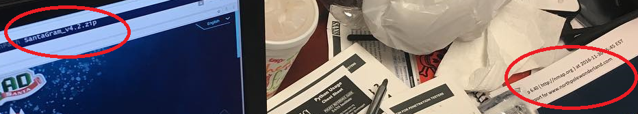

1. What is the secret message in Santa’s Tweets?
At the start of the game, you are greeted with Santa’s Business card which has both his Twitter and Instagram name (@SantaWClaus). His recent tweets don’t make much sense but they all appear to be the same length. This is an anomaly so I had used the python module Twython to download all his tweets.
Before you can do that, you’ll need to create API keys, so:
- Login to your twitter and create a new app at https://apps.twitter.com
- On the App Page, click on “Keys and Access Tokens” and copy the “Consumer Key” and “Consumer Secret”
- Scroll down and click create my Access Token, then make note of “Access token” and “Access Token Secret”
With those secrets, it is now time to use the “Twython” python module to start downloading all of Santa’s Tweets. Below is a sample script, just replace all secrets.
1
2
3
4
5
6
7
8
9
10
11
12
13
14
15
16
17
18
19
from twython import Twython # pip install twython
import time # standard lib
''' Go to https://apps.twitter.com/ to register your app to get your api keys '''
CONSUMER_KEY = 'Redacted_generate_your_own'
CONSUMER_SECRET = 'Redacted_generate_your_own'
ACCESS_KEY = 'Redacted_generate_your_own'
ACCESS_SECRET = 'Redacted_generate_your_own'
twitter = Twython(CONSUMER_KEY,CONSUMER_SECRET,ACCESS_KEY,ACCESS_SECRET)
lis = [798175529463676928] ## this is the latest starting tweet id
for i in range(0, 20): ## iterate through all tweets
## tweet extract method with the last list item as the max_id
user_timeline = twitter.get_user_timeline(screen_name="santawclaus",
count=20, include_retweets=False, max_id=lis[-1])
for tweet in user_timeline:
print tweet['text'] ## print the tweet
lis.append(tweet['id']) ## append tweet id's
After running the script, it becomes clear the secret message is “BUG BOUNTY” as it is displayed in ASCII Art. Sample below.
2. What is inside the ZIP file distributed by Santa’s Team
A link to the APK can be found on SanaWClaus’s InstaGram page. More specifically, the post where SantaWClaus calls one of his elves out on having a messy desk. The messy desk is forgivable but the elf also left his workstation unlocked which exposed potentially sensitive information. The domain name NorthPoleWonderland.com is exposed via printed out nmap scans underneath the Violent Python book, and there’s a filename exposed in the Web Browsers title bar (SantaGram_v4.2.zip). We can combine the two pieces of information and download the zip file from http://northpolewonderland.com/SantaGram_4.2.zip. 
The zip is encrypted with a password and the “RockYou” wordlist was not able to decrypt it. I decided to use John-The-Ripper to create a wordlist file based off the word “BUGBOUNTY”, which was the hidden message on Santa’s Twitter feed. To do this I ran: john --wordlist=pw --rules --stdout | tee pw.dict, where pw is a text file that just contained the word BUGBOUNTY.
John created 49 variations of the word BUGBOUNTY, which I fed into fcrackzip. Running frackzip -Dp pw.dict SantaGram_4.2.zip revealed that the password was “bugbounty”.